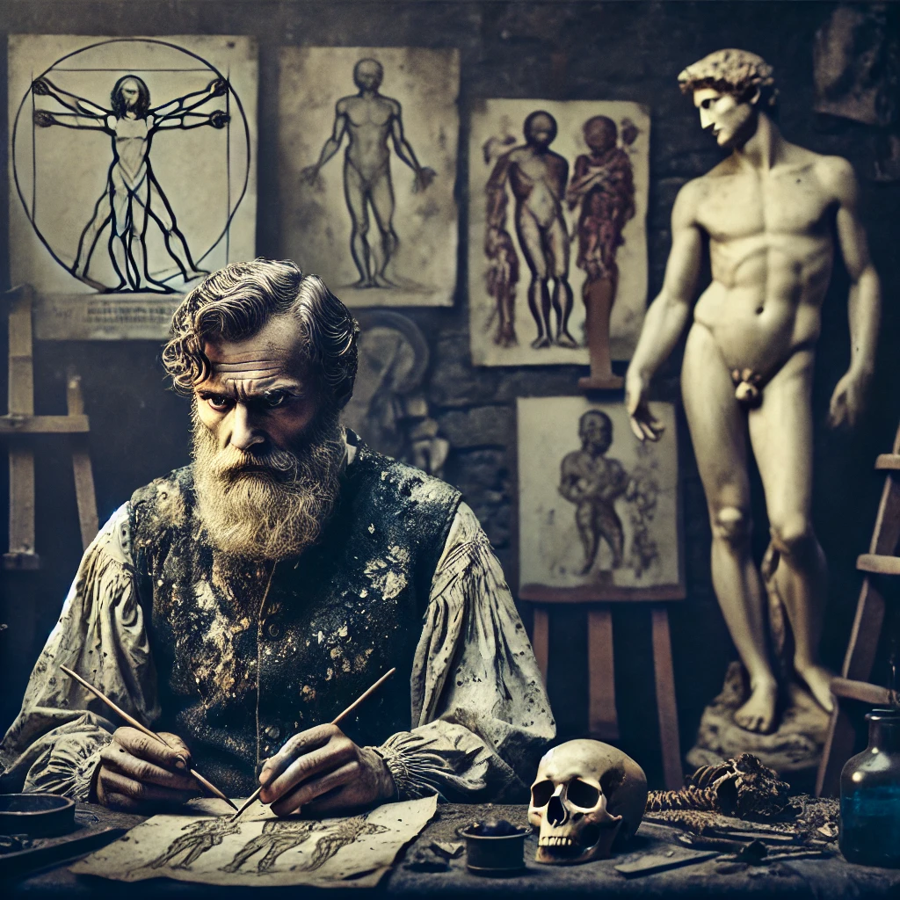

Eu sunt de părere că orice artist are propriile sale obiceiuri, mai mult sau mai puțin ciudate, care îi fac rutina de zi cu zi unică. Dar ce-ar fi dacă, în articolul de astăzi, ai descoperi obiceiuri mai puțin cunoscute despre artiștii care au revoluționat arta?
De la Leonardo da Vinci, maestrul care a sfidat timpul, la Vincent van Gogh, geniul chinuit, și până la Dalí, excentricul suprem, fiecare dintre acești titani ai artei și-a pus amprenta nu doar pe pânză, ci și pe istorie. Dacă vă simțiți pregătiți pentru o incursiune fascinantă în lumea excentrică a artiștilor care au modelat istoria artei, vă doresc lecturare plăcută în rândurile ce urmează!
Fără îndoială un geniu fără pereche, Leonardo da Vinci avea însă o ordine a sa, doar de el înțeleasă, în care își organiza viața.
Unul dintre cele mai remarcabile obiceiuri ale sale era legat de somnul fragmentat, cunoscut și sub denumirea de somn polifazic. În loc să doarmă pe parcursul unei nopți întregi, Leonardo a ales să își împartă somnul în intervale scurte, de doar 15 minute, la fiecare 4 ore. Această metodă neobișnuită nu doar că îi permitea să rămână treaz și activ, ci îi oferea și o energie aproape inepuizabilă, ajutându-l să fie extrem de productiv și să jongleze cu multiple proiecte simultan.
Leonardo avea, de asemenea, o pasiune ciudată pentru scrisul inversat. Folosind o tehnică numită „mirror writing” (scriere în oglindă), el scria de mână în mod invers, astfel încât să poată citi doar el ce scria atunci când privea notițele într-o oglindă. Deși există multe speculații legate de această metodă, unii susținând că era o măsură de siguranță pentru a-și proteja invențiile, alții că ar fi fost o modalitate de a-și exprima gândurile într-un mod mai liber, cert este că acest obicei neobișnuit a devenit parte integrantă a personalității sale enigmatice.
În afară de faptul că și-a schimbat stilul artistic de mai multe ori pe parcursul vieții, avea și o serie de tabieturi bizare care îl ajutau, se pare, să își mențină creativitatea la cote maxime.
Picasso era obsedat de ideea că părul și unghiile sale conțineau o parte din „energia” lui și nu suporta ca acestea să fie aruncate la întâmplare. Se zvonește că îi cerea frizerului să îi dea înapoi părul tuns și că își strângea unghiile tăiate, de teamă ca cineva să nu le folosească pentru a-i face rău prin vrăji. Dubios, nu? 👻
Trecând peste acest detaliu dubios, Picasso avea preferințe alimentare foarte specifice și nu se abătea prea des de la ele. Se spune că în ultimii ani de viață mânca aproape exclusiv pește și orez, fiind convins că această dietă simplă îl menține în formă. De asemenea, adora să picteze pe orice avea la îndemână, inclusiv pe șervețele de restaurant, iar uneori le folosea pentru a achita nota de plată, convins că desenul său va valora mai mult decât orice sumă de bani. Clar își cunoștea adevărata valoare, un exemplu pentru cei care se subapreciază, chiar și atunci când arta lor reflectă muncă asiduă și un talent incontestabil.
Salvador Dalí reunește în obiceiurile sale unele dintre cele mai ciudate trăsături ale celor doi artiști despre care am discutat anterior, dar le combină într-un stil unic și impresionant
Și, inevitabil, trebuie să încep cu mustața sa, care nu reprezenta doar un simplu detaliu al imaginii sale, ci o veritabilă „operă de artă”. Dalí a declarat că și-a lăsat mustața să crească într-un mod neobișnuit pentru a reflecta stilul său de viață și gândire, inspirându-se din pictorul spaniol Diego Velázquez. Dar mustața nu era singura componentă a imaginii sale publice. Dalí era obsedat de aparițiile publice și știa cum să construiască o imagine care să fie atât fascinantă, cât și șocantă. Nu de puține ori, se prezenta într-un mod extrem de teatral, purtând haine extravagante și comportându-se într-un mod „neconvențional”, astfel reușind să capteze toată atenția. Aproape că l-ai putea considera un precursor al „concurenților de la Bravo, ai stil!”😂.
Știți că am spus că Dalí combina obiceiuri din viața lui Leonardo da Vinci și Picasso? Ei bine, unul dintre aceste obiceiuri era somnul. Dalí urma un ritual de somn destul de ciudat, numit „somnul de după-amiază”. Se spunea că el dormea doar câteva minute pe zi, având o rutină polifazică similară celei a lui Da Vinci. Așezat într-un fotoliu confortabil, ținea o lingură/ cheie metalică în mână, iar pe podea așeza o tavă. Când adormea, mușchii i se relaxau și lingura/cheia cădea pe platou și îl trezea, iar astfel putea să „prindă” inspirația visurilor sale într-un mod mai intens, ajutându-l să-și hrănească viziunea artistică.
Acesta avea o relație destul de ciudată și cu mâncarea, pe care o considera o formă de artă. De exemplu, Dalí era obsedat de înghețata de ciocolată, dar o consuma doar în condiții precise. Nu voia să fie consumată direct de la frigider și trebuia să fie servită într-un anumit mod, ca parte dintr-un ritual personal. De asemenea, Dalí a creat un „meniu Dalí”, o colecție de preparate care reflectau excentricitatea sa artistică. Oaspeții care veneau la masa lui erau obligați să mănânce doar ceea ce el considera că se potrivește perfect viziunii sale. Dacă ar fi să îmi creez și eu un „meniu Dalí” pentru viitorii mei musafiri, m-aș gândi serios dacă nu cumva desertul să fie și el din „supă instant” (cei ce mă cunosc stiu de ce zic asta 🤪).
Dacă până acum v-am relatat obiceiuri care aveau la baza extravaganța și ”luxul”, acum picăm în altă extremă, cea a suferinței. După cum mulți știți, van Gogh nu a avut o viață ușoară, ba chiar a fost destul de chinuit, și când zic „chinuit”, nu mă refer doar la problemele sale emoționale, ci și la faptul că omul chiar nu avea noroc în viață. A vândut un singur tablou în timpul vieții, iar majoritatea celor din jur îl considerau excentric și instabil. Totuși a știut cum să își transforme suferința în artă.
Dar să trecem la obiceiurile sale mai neobișnuite. În primul rând, Van Gogh avea o dietă extrem de proastă. Se spune că trăia aproape exclusiv cu pâine, cafea și absint (Absintul, supranumit ”Zâna Verde”, era băutura favorită a boemilor și artiștilor din secolul al XIX-lea, avea o concentrație de alcool ce putea ajunge și la 74%, acest lichid verde misterios era preparat din pelin, anason și fenicul), iar când își permitea un „festin”, mai adăuga niște cartofi. Nu-i de mirare că sănătatea lui s-a deteriorat rapid. Mai mult decât atât, în perioadele sale de criză, obișnuia să mănânce vopsea. Da, ați citit bine! Credea că pigmenții îi pot oferi o stare mai bună, dar, în realitate, nu făceau decât să-i agraveze problemele mentale.
Și dacă tot vorbim de momente extreme, toată lumea știe povestea cu urechea. Într-un acces de furie (sau disperare), Van Gogh și-a tăiat o parte din ureche și a dus-o cadou la un bordel, ca dovadă supremă a... ceva ce doar el înțelegea. Romantism sau nebunie curată? Probabil amândouă. Din păcate, medicina vremii nu era pregătită să-l ajute, iar stările lui s-au înrăutățit din ce în ce mai mult.
Și totuși, în ciuda tuturor acestor suferințe, Van Gogh a lăsat în urmă unele dintre cele mai vibrante și emoționante picturi din lume. Capodoperele sale dezvăluie un om care simțea totul la o intensitate copleșitoare, iar ironia crudă a sorții a făcut ca succesul să vină abia după moartea sa.
Toți artiștii tind să exceleze spre perfecționism, însă Michelangelo a dus această perfecțiune la extrem. Tot ce realiza trebuia să fie perfect. Dacă un detaliu nu-i convenea, era capabil să distrugă luni întregi de muncă și să o ia de la capăt. Perfecționismul lui avea și un preț, respectiv viața personală, aproape inexistentă. Se spune că Michelangelo era atât de absorbit de muncă, încât aproape că nu se spăla și dormea în hainele sale, ca să nu piardă timp. Ba chiar, după cum povesteau apropiații, bocancii lui ajungeau să se lipească efectiv de piele, pentru că nu-i scotea cu zilele.
Pe lângă acest aspect deloc plăcut, era și de o zgârcenie incredibilă. Deși a câștigat sume colosale în timpul vieții (echivalentul a zeci de milioane de dolari în prezent), Michelangelo trăia ca un om sărac. Dormea pe un pat improvizat din scânduri și refuza să-și întrețină o locuință confortabilă, preferând să lucreze până la epuizare. Avea o atitudine atât de zgârcită încât a murit cu o avere imensă, dar aproape nimic investit în confortul său personal. Mno, voi ce părere aveți, e bine să fii atât de „chibzuit”? 👀
Alt fapt dubios este acela că, pentru a înțelege perfect anatomia umană, Michelangelo studia corpuri neînsuflețite, lucru interzis la acea vreme. Se furișa în morgi și spitale pentru a diseca cadavre, ceea ce i-a permis să creeze sculpturi incredibil de realiste, precum „David” și „Pieta”. Totuși, aceste studii macabre i-au lăsat un impact emoțional puternic, se spune că mirosul morții îl urmărea peste tot.
Se pare că genialitatea cere și ea sacrificii mai mult sau mai puțin bizare. În încheiere, vă las un gând meditativ: credeți că arta lor ar mai fi avut aceeași amploare fără aceste sacrificii?
Postat pe: 19.02.2025
Autor: Garofița Bălan